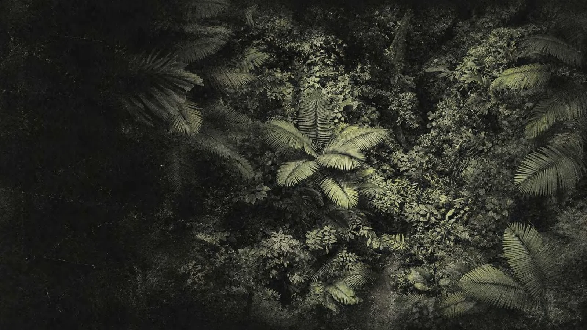

聆听自然
从物种鸣叫与自然环境声出发，关注雨林在不同时段的生命节奏。

RESONANT MORPHIC SYMPHONY
共振野境 RMS 聚焦海南热带雨林的声音，以声音特征分析与生成艺术为媒介，探索自然、视觉与情感之间的连接。
动物鸣叫并不只是背景声。它们让生命彼此交流，也让我们有机会以另一种方式感知雨林。当声音获得形状，聆听便成为一种更具体的相遇。
我们希望，人们从认识物种走向感知生命，再将这份对自然的关注，带进日常生活。
从物种鸣叫与自然环境声出发，关注雨林在不同时段的生命节奏。
以振幅、频谱和节奏等特征，建立声音数据与视觉形态之间的关系。
结合克拉尼节点的启发与有机扰动，让声音成为富有生命感的视觉纹样。
通过交互体验、科普叙事和实体产品，让一次聆听不断延伸。

以数学构建节点，以声音驱动形态，以自然传递情感。细密的颗粒、有机的节点网络、不断聚合与消散的形态，是 RMS 的视觉语言。真实摄影与抽象声纹在此相遇，连接自然的生命感与数字的生成性。
网站呈现的是克拉尼原理启发的生成式共振纹样。音频特征会实时改变画面，但输出并非物理振动实验或有限元模拟的测量结果。
当前内置声音为明确标注的合成演示，不是真实动物录音。你可以在声纹实验室上传自己的声音，体验真实的音频分析与视觉响应。
声音只在当前浏览器内处理，不会上传服务器。收藏以声音印记与参数的形式保存在当前浏览器中；清除浏览器数据后会丢失，喜欢的图形建议同时导出。
先进入声音档案主动聆听，或直接打开实验室上传音频。调整参数、触碰画布，再导出或收藏你的声音印记。